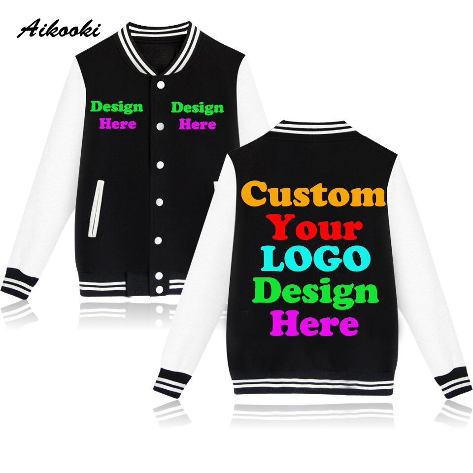
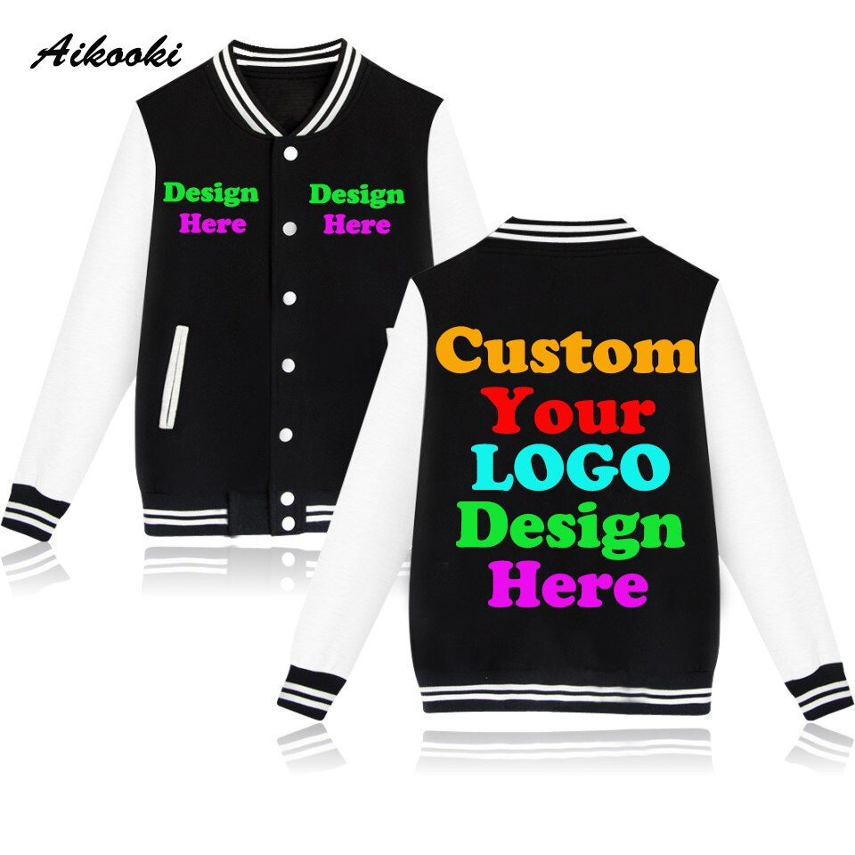

Customization may refer to: Customization (anthropology), the process of cultural appropriation and creation of bespoke design Customization (international marketing), a country-tailored product strategy Mass customization, the use of computer-aided manufacturing systems to produce custom output Modding, a slang expression for modification of hardware, software, or other items Car tuning, the modification of an automobile, motor bike, scooter or moped Personalization, the use of technology to accommodate differences between individuals Custom-fit, a design term for personalization with geometric characteristicss Bespoke, made to order. UK equivalent of US custom-made Custom software, software that is specially developed for some specific organization or other user.
Be it custom clothing or printed products; we help you find the one you exactly need. Our clothing design includes stunning graphics, logos, quotes, slogans, and text of your choice. You can even add your artwork to the design. Custom clothes are memorable gifting options too. They let the recipients know that you have put your thought into it.
 
